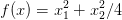

6.4 Aproximação de funções reais por polinômios interpoladores
Teorema 6.4.1. Dados n + 1 pontos distintos, x0, x1, , xn, dentro de um intervalo [a,b] e uma função f com n + 1 derivadas contínuas nesse intervalo (f ∈ Cn+1[a,b]), então para cada x em [a,b], existe um número ξ(x) em (a,b) tal que


![M = max |f(n+1)(ξ(x))|
x∈[a,b]](main777x.png)
Exemplo 6.4.1. Considere a função f(x) = cos(x) e o polinômio P(x) de
grau 2 tal que P(0) = cos(0) = 1, P( ) = cos(
) = cos( ) e P(1) = cos(1). Use a
fórmula de Lagrange para encontrar P(x). Encontre o erro máximo que se
assume ao aproximar o valor de cos(x) pelo de P(x) no intervalo [0,1]. Trace
os gráficos de f(x) e P(x) no intervalo [0,1] no mesmo plano cartesiano e,
depois, trace o gráfico da diferença cos(x) − P(x). Encontre o erro efetivo
máximo | cos(x) − P(x)|.
) e P(1) = cos(1). Use a
fórmula de Lagrange para encontrar P(x). Encontre o erro máximo que se
assume ao aproximar o valor de cos(x) pelo de P(x) no intervalo [0,1]. Trace
os gráficos de f(x) e P(x) no intervalo [0,1] no mesmo plano cartesiano e,
depois, trace o gráfico da diferença cos(x) − P(x). Encontre o erro efetivo
máximo | cos(x) − P(x)|.

L2=poly([0 1],’x’);L2=L2/horner(L2,0.5)
L3=poly([0 .5],’x’);L3=L3/horner(L3,1)
P=L1+cos(.5)*L2+cos(1)*L3
x=[0:.05:1]
plot(x,cos)
plot(x,horner(P,x),’red’)
plot(x,horner(P,x)-cos(x))
Para encontrar o erro máximo, precisamos estimar |f′′′(x)| = | sin(x)|≤ sin(1) < 0,85 e
![|| ( 1 ) ||
max ||x x − -- (x − 1 )||
x∈[0,1] 2](main781x.png)
 (x − 1) tem um mínimo (negativo) em
x1 =
(x − 1) tem um mínimo (negativo) em
x1 =  e um máximo (positivo) em x2 =
e um máximo (positivo) em x2 =  . Logo:
. Logo:
![| ( ) |
|| 1- ||
mxa∈x[0,1]|x x − 2 (x − 1)| ≤ max {|Q (x1)|, |Q (x2)|} ≈ 0,0481125.](main785x.png)

Para encontrar o erro efetivo máximo, basta encontrar o máximo de |P(x) − cos(x)|. O mínimo (negativo) de P(x) − cos(x) acontece em x1 = 4,29 ⋅ 10−3 e o máximo (positivo) acontece em x 2 = 3,29 ⋅ 10−3. Portanto, o erro máximo efetivo é 4,29 ⋅ 10−3.
Exemplo 6.4.2. Considere o problema de aproximar o valor da integral
∫
01f(x)dx pelo valor da integral do polinômio P(x) que coincide com f(x)
nos pontos x0 = 0, x1 =  e x2 = 1. Use a fórmula de Lagrange para encontrar
P(x). Obtenha o valor de ∫
01f(x)dx e encontre uma expressão para o erro
de truncamento.
e x2 = 1. Use a fórmula de Lagrange para encontrar
P(x). Obtenha o valor de ∫
01f(x)dx e encontre uma expressão para o erro
de truncamento.
O polinômio interpolador de f(x) é

![∫ 1 [ ( 2 3 )]1 [ (1 )( 4 ) ]1
P (x )dx = f(0) -x3 − --x2 + x + f -- − -x3 + 2x2
0 [ ( 3 2 )] 0 2 3 0
2-3 1- 2 1
+ f(1) 3x − 2 x 0
( 2 3 ) ( 1) ( 4 ) ( 2 1 )
= f(0) --− --+ 1 + f -- − --+ 2 + f(1) --− --
3 2( ) 2 3 3 2
1- 2- 1- 1-
= 6f(0) + 3 f 2 + 6f(1)](main789x.png)
![| | | |
||∫ 1 ∫ 1 || ||∫ 1 ||
| 0 f(x )dx − 0 P (x )dx| = | 0 f(x ) − P (x)dx|
∫ 1
≤ |f(x ) − P (x)|dx
0 ∫ | ( ) |
M-- 1 || 1- ||
≤ 6 0 |x x − 2 (x − 1)|dx
M [ ∫ 1∕2 ( 1)
= --- x x − -- (x − 1)dx
6 0 2
∫ 1 ( 1) ]
− x x − -- (x − 1)dx
1∕2[ ( 2 )]
M-- 1-- -1- -M--
= 6 64 − − 64 = 192 .](main790x.png)
Observação 6.4.1. Existem estimativas melhores para o erro de truncamento para este esquema de integração numérica. Veremos com mais detalhes tais esquemas na teoria de integração numérica.
Exemplo 6.4.3. Use o resultado do exemplo anterior para aproximar o valor
das seguintes integrais:
a) ∫
01 ln(x + 1)dx
b) ∫ 01e−x2 dx
Solução. Usando a fórmula obtida, temos que

Exercícios
E 6.4.1. Use as mesmas técnicas usadas o resultado do Exemplo 6.4.2 para obter uma aproximação do valor de:
 |
através do polinômio interpolador que coincide com f(x) nos pontos x = 0 e x = 1.
Resposta. ∫
01P(x)dx =  ,
,  max x∈[0,1]|f′′(x)|
♢
max x∈[0,1]|f′′(x)|
♢
- IME - UFRGS